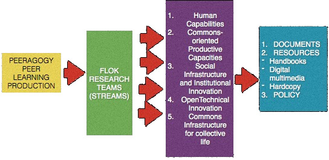
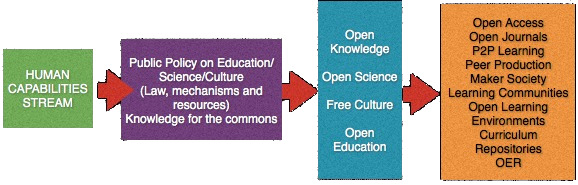

Landmarks from the life of peeragogy
Feedback from two novice course organizers
Before the Peeragogy project as such was convened, two of us realised that “peer produced peer learning” could benefit from further theoretical and practical development. Here is a summary of our early thoughts as volunteer course organizers at the Peer-2-Peer University (P2PU):
▶ Our best experiences as course organizers happened when we were committed to working through the material ourselves. Combining this with gently prompting peers to follow through on their commitments could go a long way towards keeping engagement at a reasonable level – but this only works when commitments are somewhat clear in the first place.
▶ It is typical for online communities to have strictly enforced community norms. It would be helpful to have a concise discussion of these available, together with up to date information on “best practices” for organizers and participants. The current Course Design Handbook provides one starting point, but it falls short of being a complete guide to P2PU.
▶ In a traditional university, there are typically a lot of ways to resolve problems without dropping out. P2PU’s new “Help Desk” could help with this issue – if people use it.
▶ P2PU would have to work hard to use anything but “participation” as a proxy value for “learning.” In terms of broader issues of quality control, one serious thought is for P2PU core members (including staff) to use the platform to organize their activities – entirely in the open.
▶ It is our firm belief that P2PU should work on a public roadmap that leads from now up to the point where the vision is achieved. Both vision and roadmap should be revised as appropriate.
The “FLOK Doc”
In 2013, Ecuador launched the Free/Libre/Open Knowledge Society Project to facilitate the transition to a ‘buen saber’, or ‘good knowledge’ society, which is an extension of the official strategy towards a ‘buen vivir’-based society. The Peeragogy project contributed a brief to help develop this plan. Here are some highlights:
Ecuador has a law about free software and open knowledge (Decreto 1014, launched 2008). Article 32 of the Ley orgánica de Educación Superior makes open source software mandatory for higher education. Public universities are building their own OER repositories. What peeragogy can offer are are working methods for co-producing relevant Open Educational Resources on a wider scale. As such, peeragogy is especially relevant to the goals and working methods of the Human Capabilities stream of the FLOK project, but here are some ways it could affect the other streams:
▶ Commons-oriented Productive Capacities will require people to learn new ways of working. Can we start to build a peeragogical “extension school”, by collaborating on a new handbook about sustainable agricultural techniques?
▶ Social Infrastructure and Institutional Innovation will require collaboration between many different agencies, local enterprises, and global organizations. Can peeragogy help these groups cooperate effectively? Coauthoring a handbook about inter-agency cooperation could help.
▶ Hardware and Connectivity needs to be connected to documentation and active, participatory, support that shows how to use and adapt new technologies to our use cases.
▶ Commons’ Infrastructure for Collective Life could co-develop along with a pattern language that shows how to interconnect elements of knowledge and practical solutions that are (re)generative of the commons and relevant to learners’ needs.


New strategies for “good faith collaboration”
We’re strongly in favor of the Wikimedia Foundation’s mission, “to empower and engage people around the world to collect and develop educational content under a free license or in the public domain, and to disseminate it effectively and globally.” We hope peeragogy can contribute to this and other free/open efforts to constructively reshape the way education works in the future. Some values we share with the Wikipedia project:
▶ Neutral POV: Pretty much anyone can write an article for the Peeragogy Handbook on anything related to peer learning and peer production. We’ll help review and edit to make the work shine. Rather than requiring each individual article to be neutral, we strive for overall comprehensiveness.
▶ Free content: We’ve taken the radical step of putting material in the handbook into the public domain, which means that anyone can reuse material in the handbook for any purpose whatsoever, without asking permission or even giving us attribution. The reason being: we want to make re-use, application, and extension of this work as simple as possible.
▶ Respect and civility: We strive to focus on learning. If someone disagrees with a given choice, we remember that in true dialogue there are no right or wrong answers and no one in charge. If someone seems to be frustrated with the way the project is going, we ask why and attempt to learn from them about what we could change – in order to learn more.
▶ No firm rules: The project roadmap is fluid, and our understanding of the idea of “peeragogy” is revised and extended as we go. The living patterns we catalog (in Part [practice-part]) aren’t prescriptive but they do seem to reappear with variation across different learning scenarios. We don’t have a fixed platform or leadership structure, but use whatever tools and teams seem most suitable for the purpose at hand.